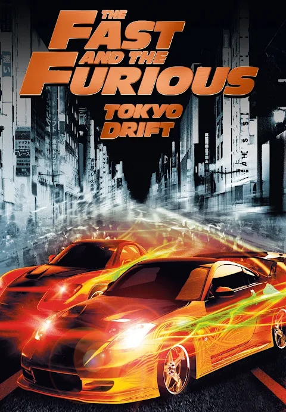

The Fast And the Furious Tokyo Drift
Introduktion
"Fast and the Furious: Tokyo Drift" (2006) är den tredje filmen i "Fast & Furious"-serien och regisserades av Justin Lin. Filmen utspelar sig i Tokyo och handlar om en amerikansk tonåring, Sean Boswell, som hamnar i stadens underjordiska drifting-kultur när han flyttar för att bo hos sin pappa. Med hjälp av en erfaren förare, Han, lär sig Sean att drifta och utmanar Takashi, även känd som "Driftkungen". Filmen är känd för sina häftiga bilscener och den annorlunda miljön, vilket gav en ny stil till filmserien och gjorde den populär världen över.